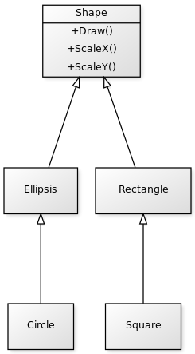
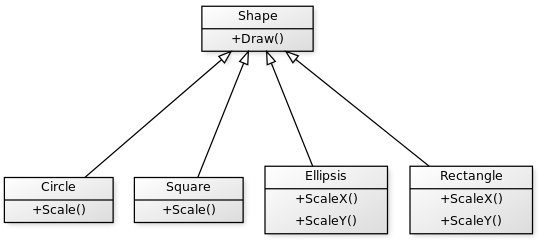

Das Bindungsproblem ist eines der schwierigsten Probleme der objekt-orientierten Modellierung. Gleichzeitig ist es nicht ganz so sichtbar und prominent wie z.B. das Generalisierungsproblem. Erstaunlicherweise haben beide Probleme sehr viel gemein.
Nähern wir uns der Problemstellung mit einem Beispiel, dem klassischen Beispiel des Bindungsproblems, nämlich dem Kreis-Ellipse-Problem.

Hier stellt sich die Frage: Was tun mit Kreis und Quadrat? Sie sind eine Spezialisierung von Ellipse (respektive Rechteck), erben aber nicht ihre vollständigen Eigenschaften. In der Praxis führt das zur Verletzung des Liskovschen Substitutionsprinzips.
Dieser Umstand wird allgemein als Defizit der Objekt-Orientierung gewertet, denn es ist kaum möglich, restriktive Beziehungen mit Klassen zu gestalten. Manche gehen sogar noch weiter und bezeichnen das Problem als "Bankrott-Erklärung der Objekt-Orientierung".
Bindung der Nachricht
Theoretisch gesprochen ist es im obigen Beispiel schwer, eine jederzeit gültige Bindung der Nachrichten ScaleX() oder ScaleY() herzustellen. Es dient exemplarisch für den Fakt, dass jede Nachricht keinen absoluten Bindungsanspruch stellen kann. Es ist demnach laut Theorie nicht möglich, eine Klasse mit einer Methode zu versehen, die niemals semantisch falsch sein kann (im Sinne der Bindung des Objektes zur Nachricht).
An dieser Stelle erwidern Befürworter der Objekt-Orientierung, dass gerade die Abstraktion inhärent diese Unvollständigkeit der Nachricht bedingt. Dem ist zu widersprechen, denn die Nachricht besteht ja nicht nur aus dem Signal und der Bedeutung an sich, sondern in erheblichem Maße auch aus Sender, Empfänger und Zeitpunkt. Die Nachricht ändert also ihre interpretative Aussage, je nach dem, von wem sie kommt und für wen sie gedacht ist.
Die Objekt-Orientierung versucht eben diesen Aspekt mit der Inklusionspolymorphie mit in das Programmiersystem mit einzubeziehen, scheitert allerdings dabei mit dem Zirkelschluß, dass es keinen absoluten Pfad der Interpretation einer Nachricht geben kann.
Anwendung und Ausweg
Es soll hier nicht weiter auf die Konsequenzen dieser Problematik eingegangen werden. Denn alleine schon die oberflächliche Auseinandersetzung mit der Tragweite des Bindungsproblems würde das Ausmaß dieses Artikels deutlich überschreiten. Statt dessen werfen wir einen konstruktiven Blick in die Praxis und nähern uns möglichen Auswegen.
Die bekanntesten "Lösungswege" (wenn man überhaupt von Lösungsweg sprechen kann) sind definitiv die Interferenz und die Redundanz. Bei der Interferenz wird auf die Spezialisierung des restriktiven Typs verzichtet. Indes wird der Typ als Eigenschaft des vermeintlichen Basistyps modelliert. Ich nenne dieses Vorgehen gerne auch scherzhaft "property typing".
Der zweite, von mir vorzugsweise gewählte Weg der Redundanz vermag zunächst noch nachteilhafter als der eben genannte Weg erscheinen. Bei der Redundanz wird schlichtweg auf die Modellierung des Subtypus per Vererbung verzichtet. Die zueinander in einem Restriktionsverhältnis stehenden Typen werden statt dessen auf einer Ebene definiert.

Der Weg der tolerierten Redundanz ist meines Erachtens nach nicht nur flexibel im Sinne der Evolvierbarkeit, sondern legt auch klar fest, dass es das Problem als Ausnahme in dem objekt-orientierten Programmierverfahren betrachtet. Das wird meiner Meinung nach besonders dadurch deutlich, dass es bei gleichzeitiger Ausnahmeregelung dennoch in dem Verfahrensrahmen der Objekt-Orientierung verharrt.
Objekt-Orientierung ist Ungenau
Bei einer Sache ist im Dilemma des Bindungsproblems ein Credo der Objekt-Orientierung wiedererkennbar: Der bewußte Verzicht auf Genauigkeit (man könnte sogar fast sagen: Verzicht auf Korrektheit). Das Bindungsproblem ist für mich ein Spiegelbild der Unzulänglichkeiten des gesamten objekt-orientierten Programmierens.
Doch gerade eben diese Unzulänglichkeiten machen die Objekt-Orientierung zu dem, was es ist: ein populäres, weit verbreitetes, schwer meisterbares und oft missverstandenes Paradigma. Es ist zweifelsohne anderen Paradigmen (wie der modularen oder funktionalen Programmierung) zwar hoffnungslos unterlegen, zeichnet sich jedoch durch Pragmatismus und vermeintlich intuitive Modellierung aus.
Das Bindungsproblem stellt aus meiner Sicht eindrucksvoll dar, wie eingeschränkt und überbewertet die objekt-orientierte Programmierung ist. Dennoch empfinde ich die Objekt-Orientierung als vielmals wichtiges und richtiges Mittel. In der modernen, trivialisierten Welt der Informatik ist die Objekt-Orientierung eben das triviale Werkzeug des Entwicklers von Heute.
Ich für meinen Teil wende gut und gerne die Prinzipien der Objekt-Orientierung an. Sie haben sich oft als nützlich und hilfreich herausgestellt. Sie haben mir auch die wirkliche Informatik näher gebracht.
Andererseits gebe ich auch gerne und offen zu: Oftmals ist die objekt-orientierte Programmierung weder die erstbeste, noch die zweitbeste Wahl. Ich hoffe, dass es in der Zukunft Software-Projekte gibt, die auf eine differenzierte Art und Weise Paradigmen einsetzen. Und ich hoffe, dass es zu einer Renaissance der modularen und funktionalen Programmierstile kommt.